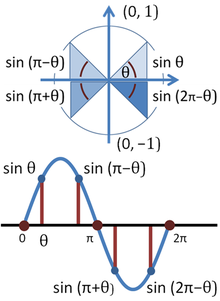

The unit circle has many applications in the real world. Different problems can be solved easier using polar or rectangular coordinates, and the unit circle is a helpful tool to transfer between the two forms. In calculus, you often need to switch between rectangular coordinates and polar coordinates because derivatives are often easier to solve when they are in polar coordinates (due to the nature of taking the derivative of sin and cos). The following applet shows students how to convert rectangular to polar coordinates in a visual manner. Polar to Rectangular Coordinate Converstion
The trigonometric functions sine and cosine can be directly correlated to the unit circle in both their starting points and patterns of movement. As we begin at (1,0) and travel along the unit circle counter-clockwise, we can graph each of the x values on a cartesian plane. As we do this, we will see the cosine function appearing. If we graph the y values on the cartesian plane, we will see the sine function appearing. This allows us to apply the principles we learn in the unit circle to the oscillating functions of sine and cosine. This is especially helpful when dealing with physical applications of frequency or resonance.
Part of the main application of the unit circle is introducing students into the world of trigonometric functions. Sine and cos are useful in engineering industries because they are continuous functions (thereby avoiding a lot of the problems that come with dealing with tangent's discontinuity. The unit circle's properties also aid students in visualizing the graphs and solutions of certain trigonometric functions. A textbook written by Minnesota State University faculty explains the importance of fostering "students' understanding of the interrelationships among graphs, and equations..." (Hornsby 2011). The unit circle helps students make key connections like these.
The unit circle's principles are essential to understanding trigonometric identities.
Calculus 2 requires an in-depth understanding of the relationships of trigonometric
functions, and the unit circle is very helpful in solving for the correct solutions.

Another application was found using Szegö's theory of orthogonal polynomials on the unit circle. This complicated application of the unit circle "is commonly used in digital signal processing (DSP) applications to solve various least-squares problems" (Dedsarte 1990). There are many other advanced implications of the unit circle. One of these involves "images encoding angular information... Examples include the hue band of color images, or images encoding directional texture information" (Hanbury 2001). Mathematicians are trying to apply mathematical morphology to image data distributed on the unit circle, though it is not immediately possible.
One may ask, "But how does the unit circle help me in my life?" To answer, that question, it's important to know that the unit circle applies to many different job fields that you may consider going into. The unit circle can be used to calculate distances like the heights of mountains (ranger) or how far away the stars in the sky are (navigator/astronomer). The cyclic, repeated nature of trig functions means that they are useful for studying different types of waves in nature: like the ocean (marine biologist, oceanography fields). Although on a higher plane, calculus is used by marine biologists for purposes similar to those served by algebra and trigonometry -- namely, data analysis and mathematical modeling.
The cylindrical behavior of light, sound, and electricity require use of the unit circle as well (electrical engineer, electrician, sound designer, light board designer).